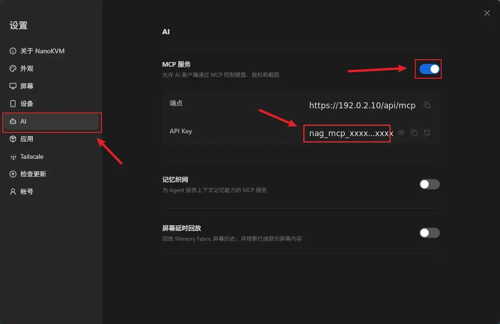
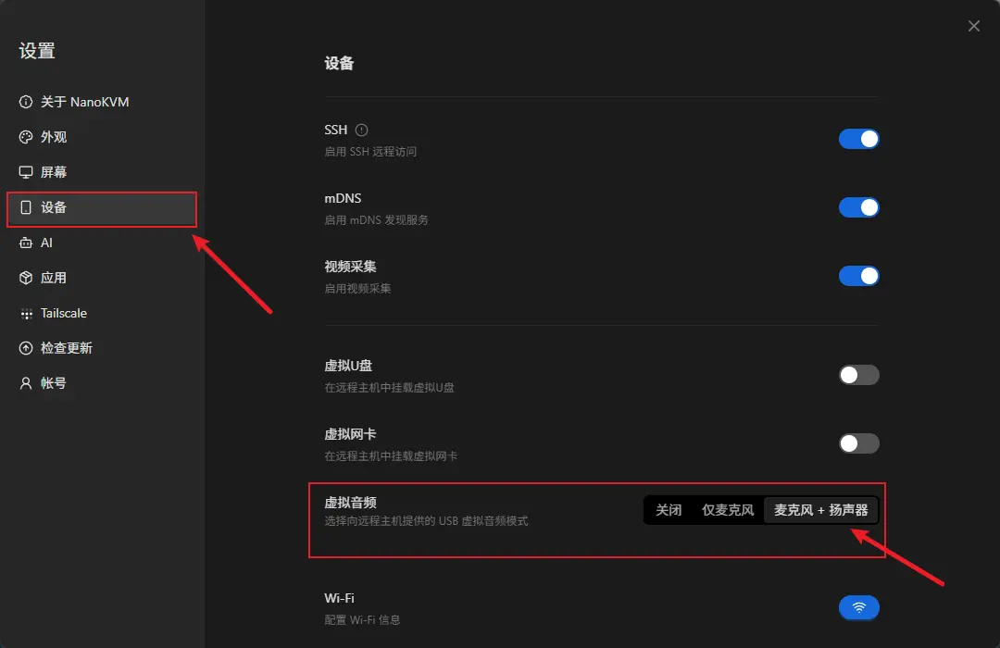
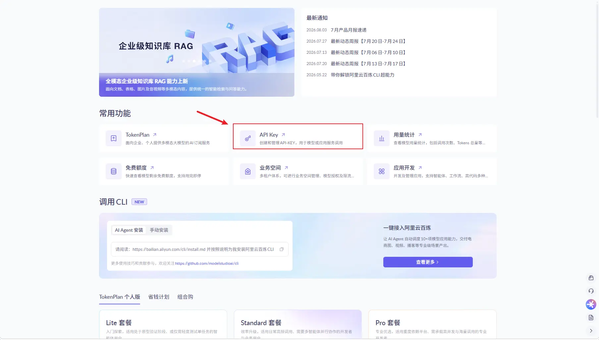
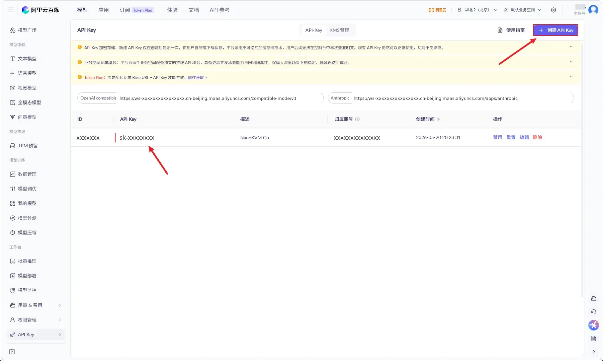
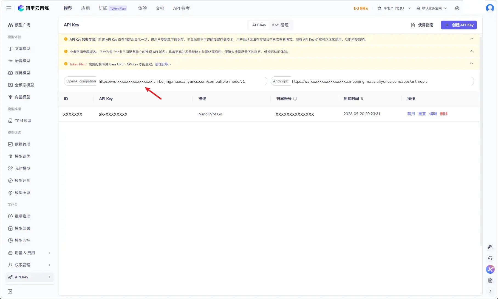
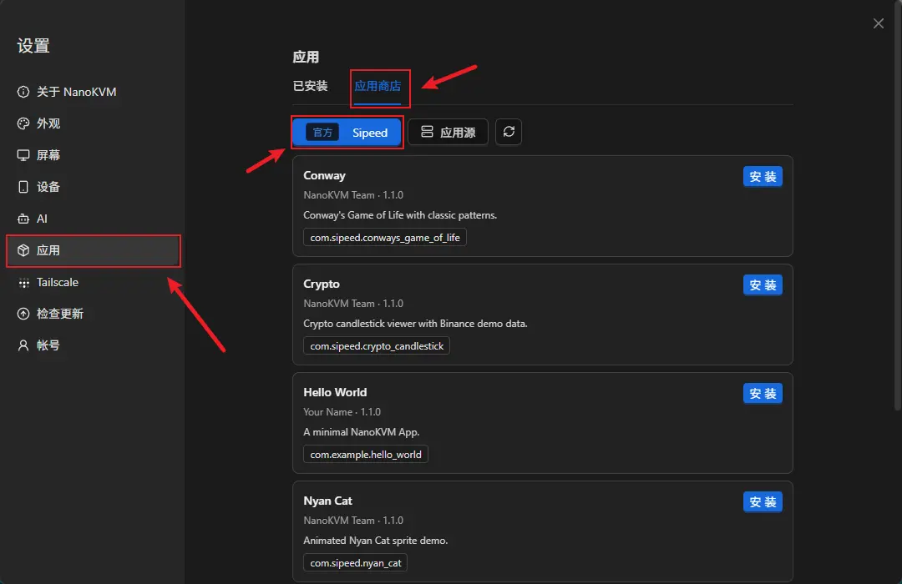
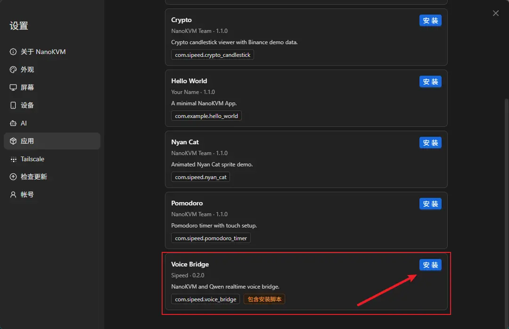
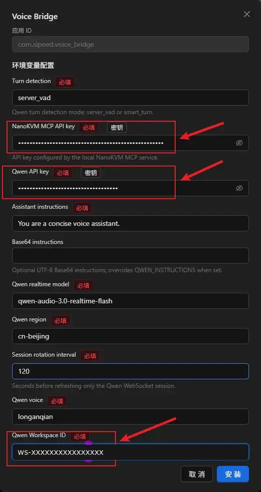
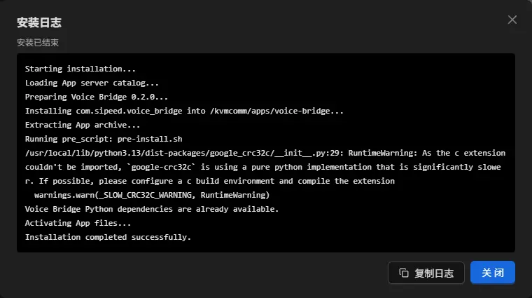
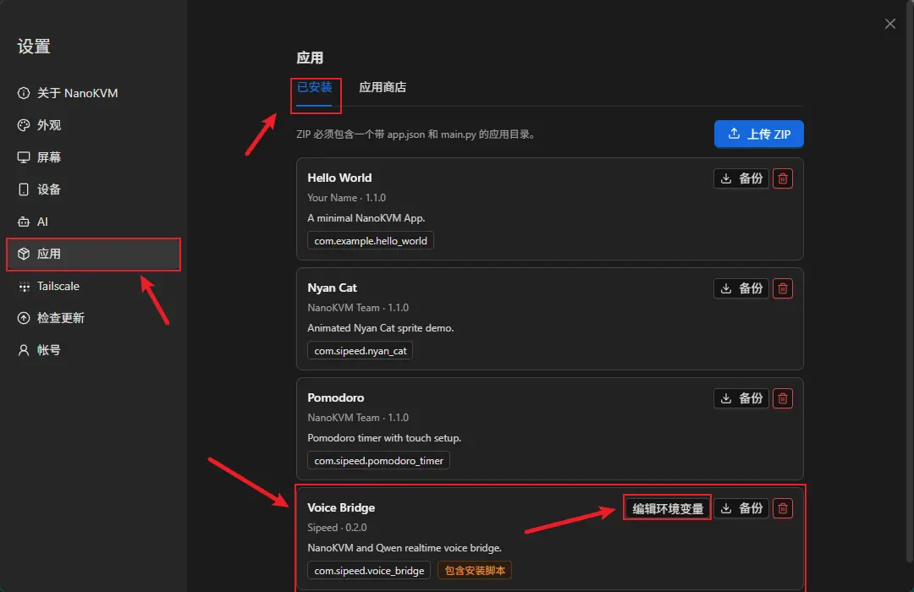

中文
中文NanoKVM Go 实时语音对话快速体验
实时语音对话快速体验
Voice Bridge 简介
Voice Bridge 是运行在 NanoKVM Go 上的实时语音桥接 APP。它在被控主机的音频设备与云端实时语音模型之间转发双向音频，让拨号端用户可以通过通话直接与 AI 对话。
在本文的示例中，Voice Bridge 使用 Qwen Audio Realtime：通话中的用户语音经 NanoKVM Go 发送给模型，模型生成的语音再通过 NanoKVM Go 的 UAC2 虚拟麦克风送回被控主机。APP 同时会在设备屏幕上显示双方的语音转写文本。
拨号手机 → 被控主机的通话音频 → NanoKVM Go → Qwen Audio Realtime
拨号手机 ← 被控主机的通话音频 ← NanoKVM Go ← Qwen Audio Realtime
可以用来做什么
通过 Voice Bridge，可以快速搭建和验证以下应用：
- AI 电话客服或语音应答演示；
- 实时语音助手和对话机器人；
- 带语音转写的通话测试环境；
- 实时语音模型、提示词和音色的效果验证。
本文只介绍如何安装并运行官方设备端 APP，适合希望先体验功能的用户，不要求了解 MCP、WebRTC、Opus 或音频重采样。如果你准备替换模型、加入知识库或 Agent，或者修改音频链路，请先按本文跑通示例，再阅读实时语音二次开发。
最终效果
安装完成后，在 NanoKVM Go 的 Apps 页面打开 Voice Bridge，然后使用手机拨号即可开始实时语音对话。设备屏幕会显示运行状态和双方的 transcript：

使用前准备
开始安装前，请确认：
- NanoKVM Go 已连接被控主机，并且可以正常访问网页控制端；
- NanoKVM Go 的系统和应用已更新至最新版本；
- NanoKVM Go 可以访问互联网，以便下载 APP 依赖并连接 Qwen；
- 手机已按设备要求接入 NanoKVM Go，并且可以正常拨打电话；
- 被控主机可以识别 NanoKVM Go 的 UAC2 虚拟麦克风和扬声器设备；
- 已准备阿里云账号，或准备按本文注册并开通阿里云百炼服务。
如果网页设置中没有
Apps或MCP Service选项，请先检查并更新 NanoKVM Go 的系统和应用版本。
获取连接信息
安装 APP 前，需要准备 NanoKVM Go 的 MCP API key，以及 Qwen 的 Workspace ID 和 API key。
启用 MCP Service
进入 设置 > AI > MCP 服务，启用 MCP 服务并记录页面显示的 API key。该密钥用于允许 Voice Bridge 创建 NanoKVM Go 双向音频会话。

不要将 MCP API key 分享给他人，也不要把真实密钥写入源码或提交到公开仓库。
启用虚拟音频
进入 设置 > 设备 > 虚拟音频，启用虚拟音频。然后在被控主机的系统音频设置中，确认 NanoKVM Go 的 UAC2 虚拟麦克风和扬声器设备均已被识别。

获取 Qwen 连接信息
- 打开 阿里云百炼控制台，注册或登录阿里云账号，并按页面提示开通百炼模型服务；
- 在控制台右上角选择
华北2（北京）。Voice Bridge 默认使用的qwen-audio-3.0-realtime-flash模型目前仅支持该地域；
- 进入
API Key页面；

- 创建用于
Voice Bridge的API Key。创建成功后请立即复制并妥善保存完整密钥；

- 创建完成后，页面会显示
OpenAI compatible和Anthropic两类兼容接口地址。QWEN_WORKSPACE_ID是接口地址域名最前面的ws-...，紧随其后的地域代码则是QWEN_REGION；
例如接口地址为：
OpenAI compatible:
https://ws-xxxxxxxxxxxxxxxx.cn-beijing.maas.aliyuncs.com/compatible-mode/v1
Anthropic:
https://ws-xxxxxxxxxxxxxxxx.cn-beijing.maas.aliyuncs.com/apps/anthropic
则对应配置填写：
Qwen Workspace ID: ws-xxxxxxxxxxxxxxxx
Qwen region: cn-beijing

- 在百炼控制台或 Qwen Audio Realtime API 使用指南中确认账号当前可用的实时语音模型名称和支持地域。
后续配置 Voice Bridge 时，需要填写或确认以下 Qwen 字段：
Qwen Workspace ID（对应QWEN_WORKSPACE_ID）；Qwen API key（对应QWEN_API_KEY）；Qwen region（对应QWEN_REGION），必须与 API Host 中的地域代码完全一致。
按照上面的北京地域配置时，Qwen region 和 Qwen realtime model 均可保留 APP 默认值。安装前仍需确认 region 与 API Host 中的地域代码一致。
不同账号的可用模型、地域和免费额度可能不同，请以百炼控制台显示的信息为准。
安装并配置 Voice Bridge
Voice Bridge 可以直接从 NanoKVM Go 内置的 Sipeed 官方 App Server 安装，无需使用 SSH、SCP，也不需要手动执行 apt install 或 pip install。
登录 NanoKVM Go 网页控制端，进入
设置 > 应用 > 应用商店；选择内置的 Sipeed 官方仓库；

- 找到
Voice Bridge，然后点击安装；

等待安装配置窗口打开。
在自动生成的环境变量表单中填写连接信息。网页表单显示的是配置项名称，APP 内部会把它们保存为对应的环境变量。首次体验时填写
NanoKVM MCP API key、Qwen Workspace ID和Qwen API key，确认Qwen region为与 API Host 一致的cn-beijing，其他字段通常可以保留默认值。
| 网页显示项 | 对应环境变量 | 说明 |
|---|---|---|
Turn detection |
INTERACT_TYPE |
有默认值；用于设置轮次检测模式，可选择 server_vad 或 smart_turn |
NanoKVM MCP API key |
NANOKVM_MCP_KEY |
在 NanoKVM Go 的 MCP Service 页面获取 |
Qwen API key |
QWEN_API_KEY |
在百炼控制台创建 API Key |
Assistant instructions |
QWEN_INSTRUCTIONS |
有默认值；用于设置模型的身份、回答方式和任务要求 |
Base64 instructions |
QWEN_INSTRUCTIONS_B64 |
可选；填写后会覆盖普通 instructions，首次体验建议留空 |
Qwen realtime model |
QWEN_MODEL |
有默认值；如账号模型权限不同，再改为当前可用的实时语音模型 |
Qwen region |
QWEN_REGION |
有默认值；本文保留 cn-beijing，并确认它与 API Host 中的地域代码一致 |
Session rotation interval |
QWEN_SESSION_ROTATE_SECONDS |
有默认值；用于设置 Qwen 会话轮换间隔 |
Qwen voice |
QWEN_VOICE |
有默认值；用于设置模型回复使用的音色 |
Qwen Workspace ID |
QWEN_WORKSPACE_ID |
从百炼兼容接口地址的 ws-... 前缀获取 |

页面中的具体字段和默认值可能随 APP 版本更新，请以当前环境变量表单和 Qwen 官方文档为准。
- 填写完成后，点击安装，并保持
安装日志窗口打开，直到页面显示安装成功。
Voice Bridge 的安装脚本会自动安装编译依赖，并把固定版本的 Python 依赖安装到 APP 自己的 python/ 目录。首次安装需要下载和构建 ARM 依赖，通常需要等待数分钟。日志窗口会实时显示软件包下载、构建和安装进度。

如果安装失败，请点击 复制日志 保存完整日志，并重点检查日志末尾是否出现网络、软件源、存储空间或 Python 包构建错误。
安装后可以随时在 设置 > 应用 > 已安装 中修改 Voice Bridge 的环境变量配置，新配置会在 APP 下次启动时生效。

运行并测试
启动 APP
- 在 NanoKVM Go 触摸屏上进入
Apps页面； - 选择
Voice Bridge并启动； - 等待 APP 显示模型和音频连接已就绪。
发起语音对话
- 使用手机拨号，并让被控主机接通；
- 对着手机说一句话；
- 确认 NanoKVM Go 屏幕出现 User transcript；
- 等待 Qwen 回复，确认屏幕出现模型 transcript；
- 确认模型回复的语音能够通过被控主机传回手机。
已在 Android 和 iPhone 手机上验证该流程可用。
常见问题
被控主机听不到模型回复
在被控主机的系统音频或通话软件中，确认输入设备已选择 NanoKVM Go 的 UAC2 虚拟麦克风，并检查该输入设备是否被静音。
APP 没有收到手机声音
确认手机通话使用的是 USB 音频，并在被控主机的系统音频或通话软件中选择 NanoKVM Go 的 UAC2 虚拟扬声器。当前流程不能使用 DP 音频传输手机通话媒体。
APP 无法连接 Qwen
检查 Qwen API key、Qwen Workspace ID、Qwen region 和 Qwen realtime model 是否匹配，并确认 NanoKVM Go 可以访问互联网。账号的模型权限、额度或限流状态也可能导致连接失败。
修改配置后没有生效
退出 Voice Bridge，在 设置 > 应用 > 已安装 中保存新配置后重新启动 APP。环境变量的新值在 APP 下次启动时生效。
如何退出 APP
退出 Voice Bridge 后，APP 会关闭模型、WebRTC 和媒体会话，不会继续在后台播放。APP 的通用退出手势和管理方法请参考自定义 APP：退出 APP。
了解原理和二次开发
官方设备端示例源码位于 NanoKVM-Go-Apps main 分支的 voice-bridge/，共享 App SDK 和开发文档位于该仓库的 base 分支。
如果你需要替换 Qwen、接入其他实时语音模型，或者加入知识库、Agent、业务工具和自定义音频处理，请继续阅读实时语音二次开发。
参考：NanoKVM-Go-Apps · 阿里云百炼控制台 · 获取 API Key · 获取 Workspace ID · Qwen Audio Realtime 文档